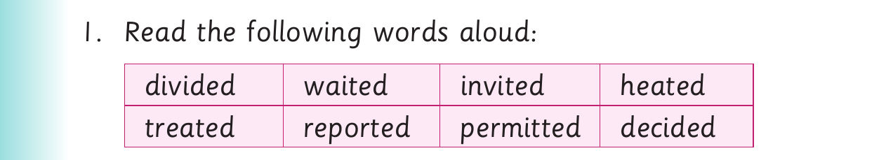

Words with familiar suffixes - Activity 4
(d) Somebody dropped money in the library. (e) They filled the pots with water. (f) Terrorists bombed the building. (g) They talked about that problem at the meeting. (h) She turned left and followed that street. (i) They walked for many hours.
Activity 4

1. Read the following words aloud: divided waited invited heated treated reported permitted decided
2. Add five words to the list and read them aloud. 3. Read the following sentences aloud: (a) We waited for him in the house. (b) We reported to the police. (c) The police arrested the thieves. (d) The driver decided to stop the car. (e) The teacher permitted us to go. (f) We invited him to stay with us. (g) Strangers wanted to leave. (h) Pupils completed the exercise in time. (i) Mother deleted all the numbers from her phone. (j) The term ended in June.